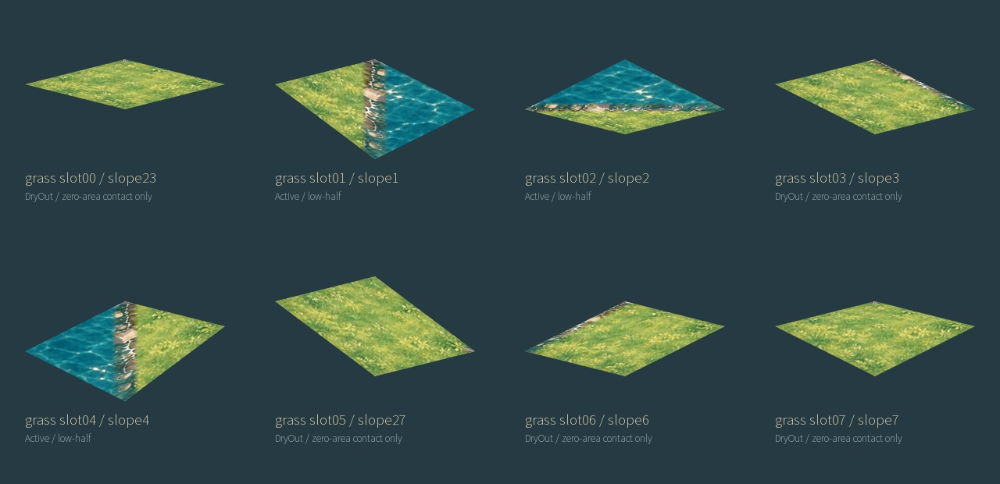
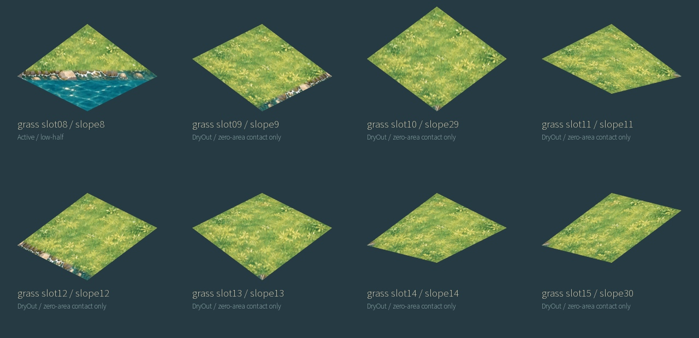
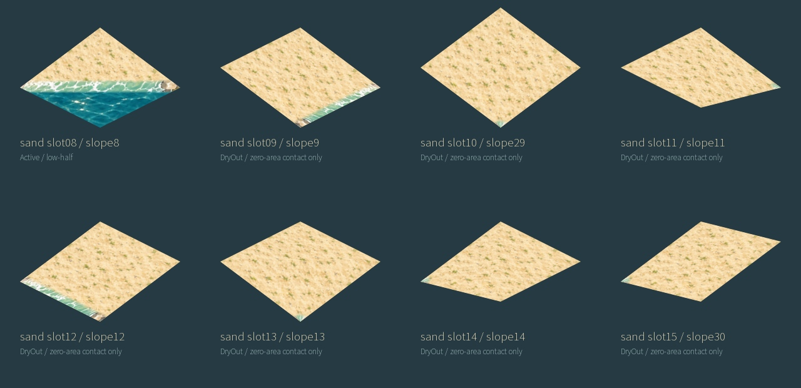
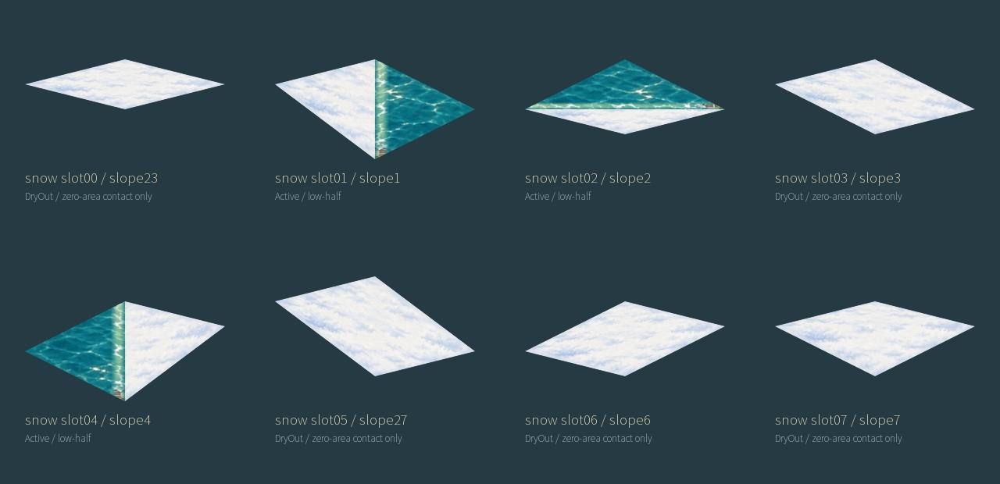
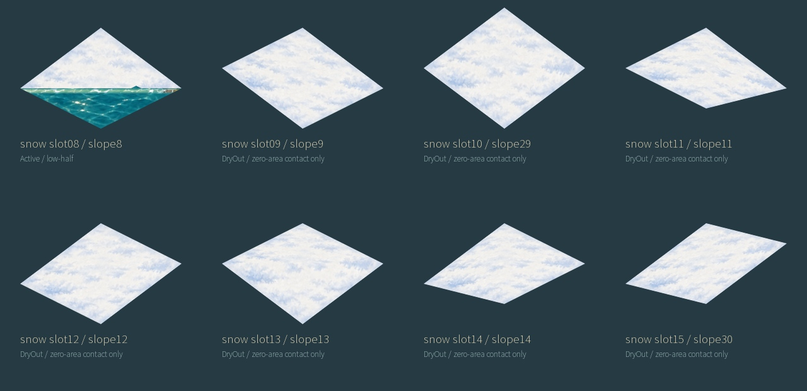
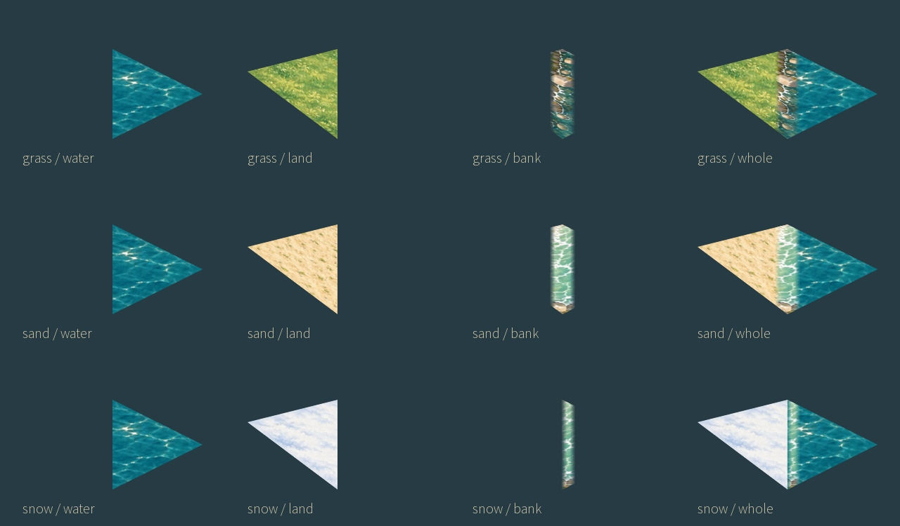

48 actual assemblies: 16 legal source slots × 3 climates. Water horizontal; land follows source height. Static art inspection; Unity unverified.






| Climate | Slot | Slope | Applicability |
|---|---|---|---|
| grass | 16 | 5 | source assertion prohibits drawing; no PNG |
| sand | 16 | 5 | source assertion prohibits drawing; no PNG |
| snow | 16 | 5 | source assertion prohibits drawing; no PNG |
| grass | 17 | 10 | source assertion prohibits drawing; no PNG |
| sand | 17 | 10 | source assertion prohibits drawing; no PNG |
| snow | 17 | 10 | source assertion prohibits drawing; no PNG |
Flat and half-tile slopes are outside this full-tile shore draw contract. Multi-corner/steep legal coast is DryOut; zero-area sea contact is explicit and contains no invented broad water pool. The mask is a documented reconstruction from source geometry, not an upstream external-graphics pixel mask.